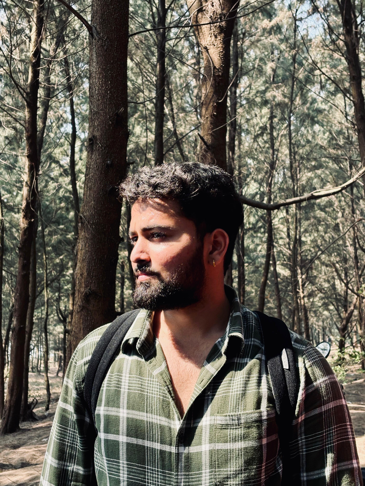

I'm Jatin S. Tandel — Fueling innovation with technology and creativity.
Name: Jatin S. Tandel
Location: Palghar, Maharashtra, India
Education: B.E in Electronics and Computer Science (Currently Pursuing)
Languages: English, Hindi, Marathi
My goal is to contribute to open-source, assist fellow developers, and create innovative tools that enhance accessibility and speed in technology — much like the precision and performance of F1 cars.
Hobbies: Gaming, Photography, Gym — fostering creativity and focus.
Role Models: Steve Jobs (Innovation), A.P.J. Abdul Kalam (Vision)
Books: “Rich Dad Poor Dad” – Financial wisdom for rapid growth.
Favorite Sites: Dev.to, Hashnode, Product Hunt
Startups I Admire: Notion, Figma – sleek, fast, and highly efficient.
Volunteering: Taught basic tech skills to children in rural areas.